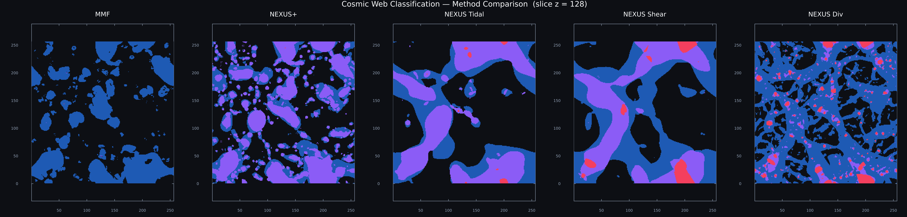
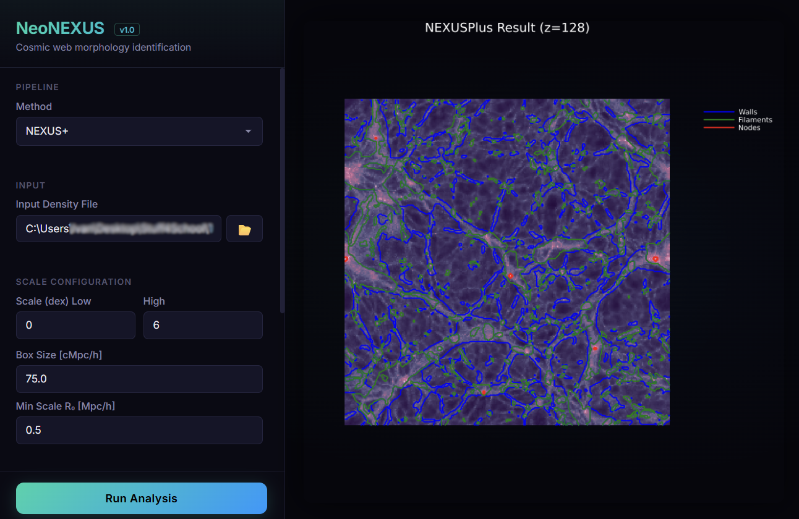
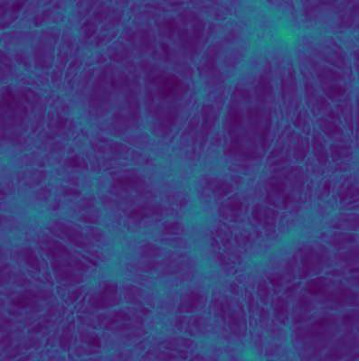

Graduating with Honors & Cum Laude.
Graduated with Honors.
Graduated with Cum Laude.
Analyzing the DESI Cosmic Web with modernized tools, including DTFE, NeoNEXUS and Machine Learning. Supervised by Rien van de Weijgaert.
Correcting Redshift Survey Distortions using IllustrisTNG simulated data and Neural Networks. Supervised by Rien van de Weijgaert.
Separated multiple populations in globular clusters using Gaia DR3 data and Color Magnitude diagrams. Supervised by Else Starkenburg and Emma Dodd.
Observe Exoplanet Transit with the Gratama and LDST telescopes to confirm project feasibility. Supervised by Jake Noel-Storr.
Stayed overnight supervising observations with student groups. Worked under Reynier Peletier, Scott Trager and Jake Noel-Storr.
Led tutorials, prepared and graded assignments, midterm and final exam. Worked under Eric Bergshoeff.
Led tutorials. Graded assignments and final exam. Worked under Rien van de Weijgaert.
Supervised student groups in the completion of their projects.
The newest generation of the MMF/NEXUS tool written in Julia. Built from the ground up for extensibility, modularity, and high performance in analyzing multiscale morphology of three-dimensional scalar fields.
GitHub Repo Project Website
An extension package encapsulating advanced cosmological workflows. Built on top of NeoNEXUS, it enables morphology extraction not just from density, but from velocity divergence, shear, and tidal tensors.
GitHub Repo
A comprehensive graphical interface for the NEXUS pipeline. Allows users to load cosmological volumes, run multiscale filters, apply thresholds, and visualize complex 3D structures without touching the command line.
Project WebsiteCorrecting survey distortions using PyTorch and Flux.jl with Graph Neural Networks on IllustrisTNG data.

An optimized implementation of Delaunay Tessellation Field Estimator in Julia, abstracted for velocity derivatives.
GitHub Repo